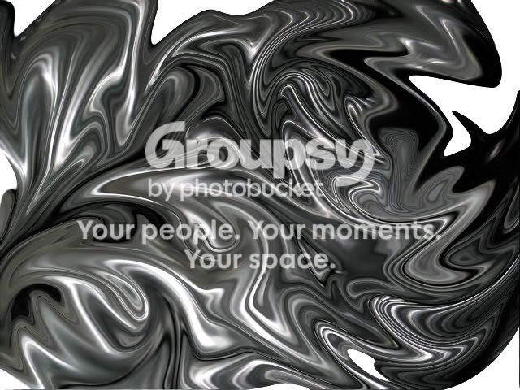

Metanet Forums
Users
·
Statistics
Index
›
General
›
Arts
›
Images
› Liquid Metal
#15200
1
2007-05-12T10:44:18Z
Codes
an effect i achived with gimp, ive also made a wallpaper sized one
Attachment (lost): post-20-1178966658.png
#320516
2
2007-05-12T15:24:10Z
nevermore
Well, if you were going for liquid metal, quite honestly it really doesn't look like that. Too much contrast between the black and white, and it doesn't actually convey a sense of lustre. Or malleability.
But in any case, it's a cool effect.
#320519
3
2007-05-12T15:58:42Z
usaswim
Oh, I can do that with Photoshop. It's fairly easy, all you need to do is liquify the image, and I doen't really look like liquid metal...
EDIT: That was fun!
